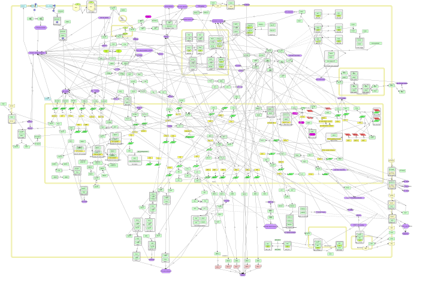

Institut Curie Collection, Invasion and Motility Map

- Invasion and Motility Map
- Access to NaviCell
- Access to MINERVA
- Access to NDEx
Tumorigenesis is a gradual multistep process that enables cells to acquire new biological capacities that will allow tumor formation and dissemination for metastases formation. To invade distant organs, tumor cells have to acquire migration capacity, which is provided by the EMT associated with cytoskeleton reorganization and modification of cellular adherence. This map depicts signaling pathways by which a cancer cell can achieve the features that lead to metastasis. Also, the phenotypes that occur before metastasis are present, such as proliferation, apoptosis resistance, and cell survival among others. Due to the PRL-3 (or PTP4A3) phosphatase has been described to play key roles in this processes, we thoroughly depict this protein. This map consists of 117 proteins, 364 reactions and it is based on approximately 60 papers. This map is composed by 6 modules: